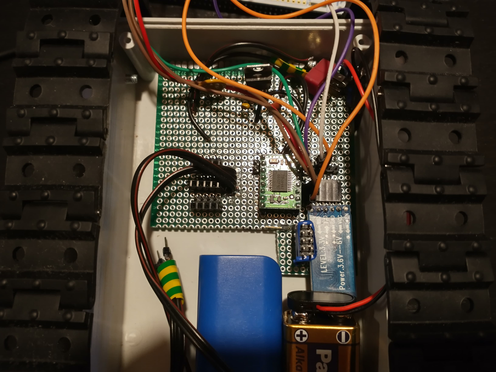

Elektronika

Końcowym efektem prac zespołu elektroników jest płytka pozwalająca na sterowanie silnikami robota za pomocą dwóch sygnałów pwm
sterujących prędkością obrótów silników oraz czterech sygnałów logicznych sterujących kierunkiem obrotów silników.
Płytka posiada wejścia, na które możliwe jest nałożenie mikrokontrolera STM.
Na płytce występują dodatkowo 3 zestawy pinów (5V, 3.3V i GND) pozwalające na podłączanie do płytki dodatkowych peryferiów
co pozwala na ewentualny rozwój konstrukcji w przyszłości.